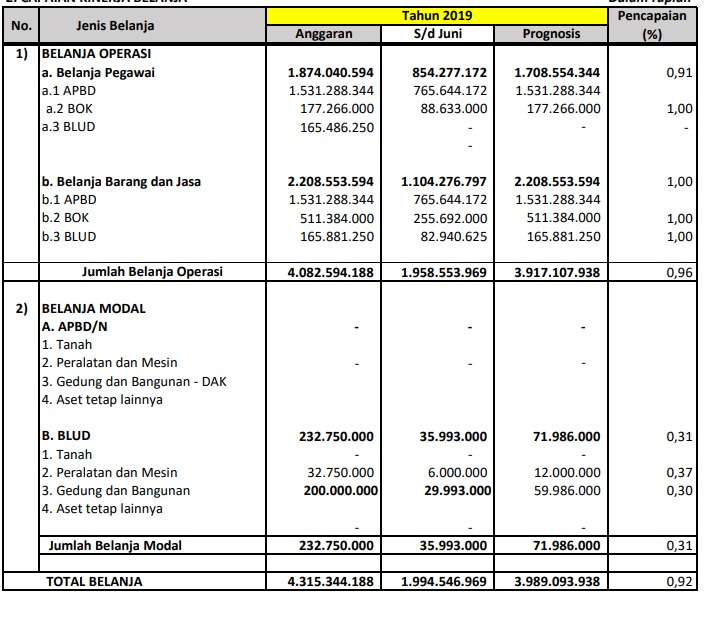

Puskesmas Pangkalan Balai Banyuasin.
Beranda
Profil
Sejarah
Visi dan Misi
Dokumen
Layanan Informasi
Kritik & Saran
Register
Data Puskesmas
Berikut ini beberapa data yang dapat anda pelajari
Capaian Kinerja Belanja

Pencapaian Kinerja Pendapatan
BACK
© 2022.
Puskesmas Banyuasin
All Rights Reserved.